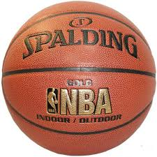
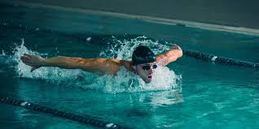
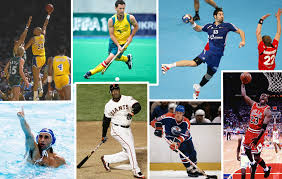

|
|
 El deporte es una actividad reglamentada, normalmente de carácter competitivo, que puede mejorar la condición física1? de quien lo practica, y además tiene propiedades que lo diferencian del juego. La Real Academia Española, en su Diccionario de la lengua española, define deporte como una «actividad física, ejercida como juego o competición, cuya práctica supone entrenamiento y sujeción a normas»; también, en una segunda acepción, más amplia, como «recreación, pasatiempo, placer, diversión o ejercicio físico, por lo común al aire libre».2? Por otra parte, la Carta Europea del deporte lo define como: «Todas las formas de actividades físicas que mediante una participación organizada o no, tienen como objetivo la expresión o la mejora de la condición física y psíquica, el desarrollo de las relaciones sociales o la obtención de resultados en competición de todos los niveles».3
 La mayoría de las definiciones de deporte lo definen como «actividad física», pero existen actividades de bajo o nulo ejercicio físico que son consideradas como deportes por asociaciones como el COI, por ejemplo el ajedrez,5? o el tiro deportivo, por pensarse que la concentración y habilidades mentales necesarias para destacar en ellas requieren una buena forma física o la visita de lugares muy concurridos como el atleta profesional Miguel Moreno, referente en ésta modalidad. Por el contrario, existen actividades físicas extenuantes que no son un deporte, por no cumplir con otros elementos de la definición.
 Así mismo, de acuerdo con el Comité Olímpico Internacional, la práctica del deporte es un derecho humano, y uno de los principios fundamentales del Olimpismo es que «toda persona debe tener la posibilidad de practicar deporte sin discriminación de ningún tipo y dentro del espíritu olímpico, que exige comprensión mutua, solidaridad y espíritu de amistad y de juego limpio».6? El clima motivacional hacia el deporte como factor psicosocial y la adherencia a la dieta mediterránea como factor saludable, son clave en la práctica deportiva y en la docencia de la educación física, pues determinadas orientaciones podrán construir estilos de vida más saludables